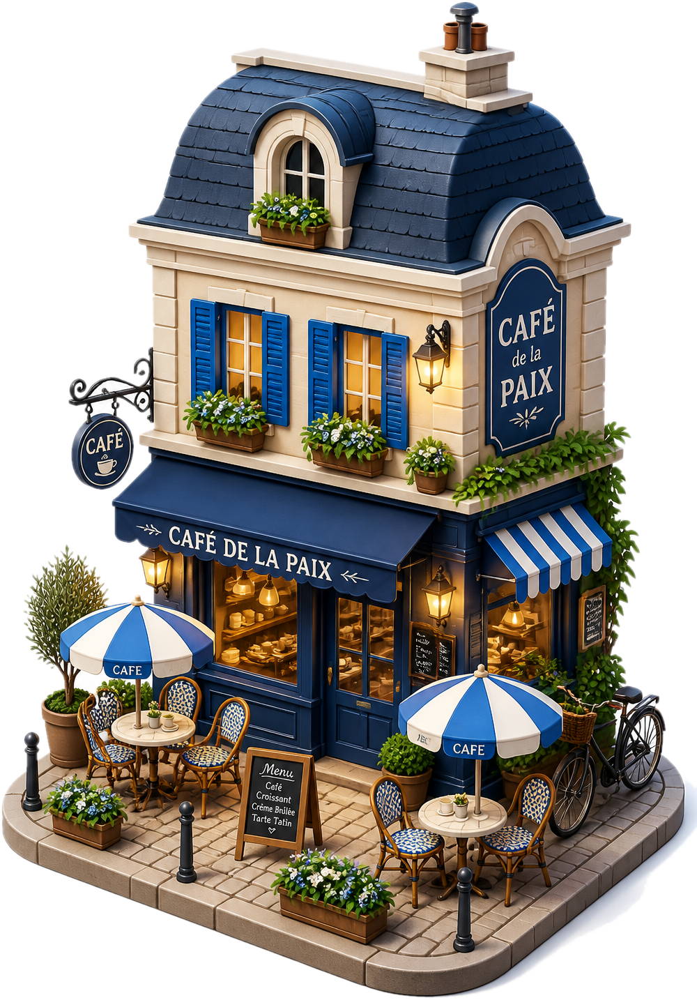
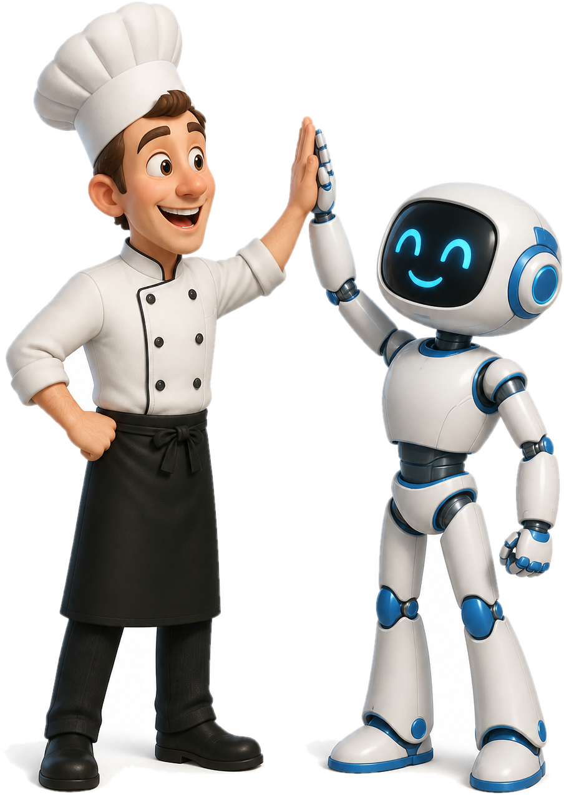
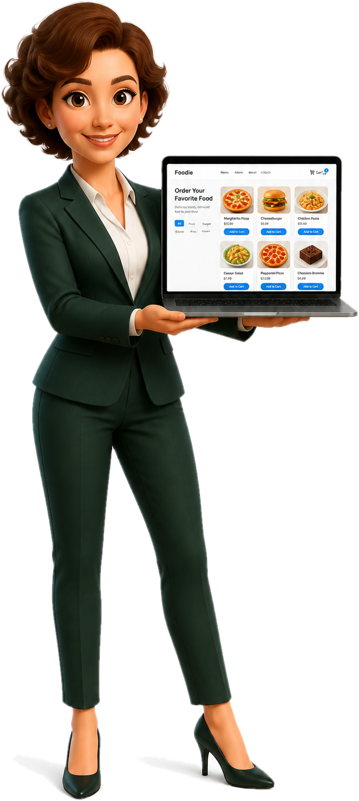

Gérer un
restaurant
en 2026
?

Chaque jour, tout gérer…
Une seule app
pour tout piloter.
Réservations
Stock & commandes
Planning équipe
HACCP

Votre assistant IA,
toujours là.
Vos clients trouvent,
vous gérez.
Burgers, sushis, tacos…
Burger maison
Chez Marco · 1,2 km
Voir
Poke bowl
Green House · 800 m
Voir
Plat du jour
Café de la Paix · 400 m
Voir

Bientôt disponible.
Suivez-nous